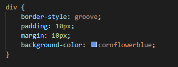
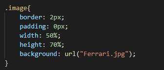
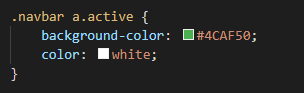
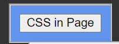
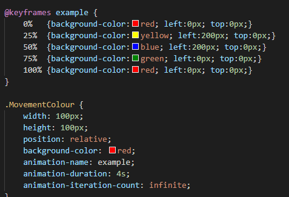

The image bellow shows code for the different sections/ bule background. The margin seperates it from the edge of the page, making it stand out more. It has a border style but not a boarder which is why there is a whie faint border around the edge of the blue boxes. The padding universally increases the distance of anything inside it like the other boxes, into being 10px awway from the border of the box, which is used to enure eveything inside it lines up with eachother The image bellow uses shows percentages of the original picture and include a small border. The padding is also listed as 0px, as it needs to be against the border. This allows for the image to be down scaled to a point where the image fits the list withought specifyinh the specifc pixels, which could be done alternativly for a more precise image size. This is used throuought the site to scale anything accordingly to fit an astetic or need of the site, such as some infoamtion boxes being on the left or right of the page, with larger or smaller margins, borders and padding
.class - all elements with the name of the class
.class1.class2 - all elements that are Class2 desendant of Class1
.element - selects all elements of the type e.g. body or p, body is used in this webpage
:active - selects the active link
The image bellow demonstrates the calss Navbar, desendant a, and the active selector.  and this is the result of the above  what these do is allow for selections to be made for what is going to be changed/edited in the CSS such as the above with box model sizes and colours, there are also more selections such as:read-only - selects input as read-only
:read-write - selects input as writable and readable
:hover - this selects link when the mouse is over anthing asigned with the class beforehand
These are useful for specific senarios such as designating standards, animations and specifying what is different to another selection.Animation - here are some examples of animations that can be done with CSS and code accompanying them
The above is an example of 3 animations, translations/movemnet, colour change and repeating animations the code bellow shows the stages of animation and how the link is achieved

The animation above uses a 4 second tims which is split between the stages based on the percentage of the animation taken by the animation code. animations are done via a mainstream animation and a speerate section for the animation, which includes timings and intervols as shown, which can be changed between different linked classes, this allows for effects where the animation stops from left to right every intervol
A transition is the timing between the changes in colour, or a lowed changing of states, so rather than the square teleporting across the screen and changing colour imidiatly. This is done primarily through the percentages, this allows for control over differing aspects or stops in an animation.
Overview of CSS implamentation # Inline is benefitial for use when there is a need for only one line to be changed into a different style. or if one section needs to be differnet using CSS, this the worst for having multiple sections with the same CSS as it means there is moer code and more to change if somthing goes wrong making it useful for singlular segments this means anytning such as an image being scaled one, it will be best for inline, but if any other sre supposed to be the same size, or if there are any repeats then inline is impractical.
Embbedded is useful for reapeated instances of code being used, such as having every other paragraph green and the other reapeated paragraphs as blue. This needs to be reapeated within this one page as different pages have different colour arangments. In this case Embedded allows for different colours for each page and can be copied to other pages but is not as good for many webpages repeating colours or variations of CSS. This takes more space at the top of the code and can get too long on one webpage as more stuff is added to the page, and repeated code from page to page will increase the folder size. This makes Embbeded optimal for repeats on only one webpage such as a photo album webpage where all the photos need to be sized the same or any infoamtion needs to be ordered in a specifc manor for one page. anything for one usage is pointless.
Exterior is useful for multiple pages using the same format such as how this webpage is done, it means that if the colour was to be changed on every page then it would be in one spot where they can all be changed. This is vast work for any one time use of CSS like how Interior is used and is extra programing if it will only be used on one page making it obsolite unless used on two or more pages. Therefore Exterior is best for a multipage scheme such as a navigation bar, which is featured on each webpage, and divs which overlap into other pages.
Summary
interior is best for one time CSS, Embedded is best for multiple things on a page, Exterior is best multipage CSS